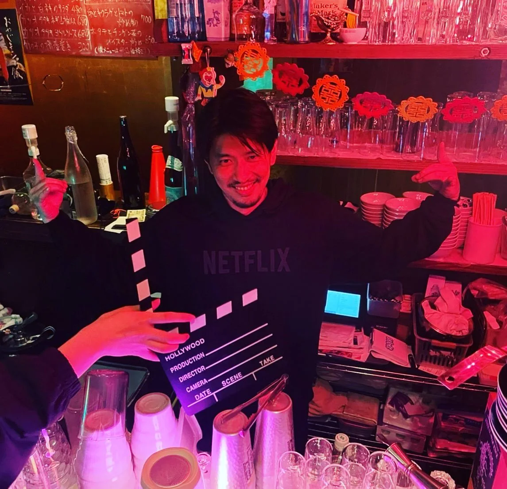

2022年4月18日
さて、本日4月１８日を持ちまして、

さて、本日4月１８日を持ちまして、 一度昼営業を終了し 【平日】 17:00〜24:00 【土曜・祝日】 15:00〜23:00 に戻します。 理由と致しましては、みんな遅くまで残っていただいてるので、 15:00〜翌5:00という営業時間になる日が多いからです！ 死にはしませんが、事務作業ができませんし、ネットフリックスもみれません。 時短営業にしましたので、心置きなく遅くまで残ってください！ また、この営業時間に戻せるように頑張りますのでよろしくお願いいたします🙇♂️ #中華バル#中華#中華料理#福島区グルメ#路地裏#B級グルメ#中国#チャイニーズ#路地裏チャイニーズ有馬#有馬#シュウマイ#餃子#点心#フォローミー#followme#パクチー#麻婆豆腐#営業再開#ネットフリックス#サブカルくそ野郎